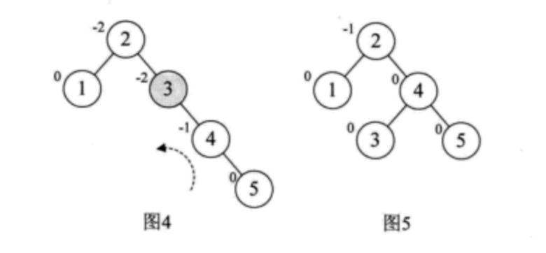
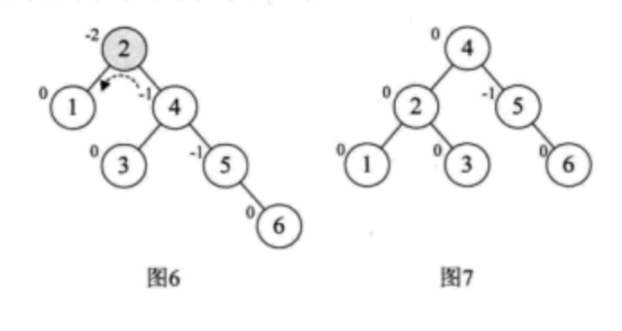
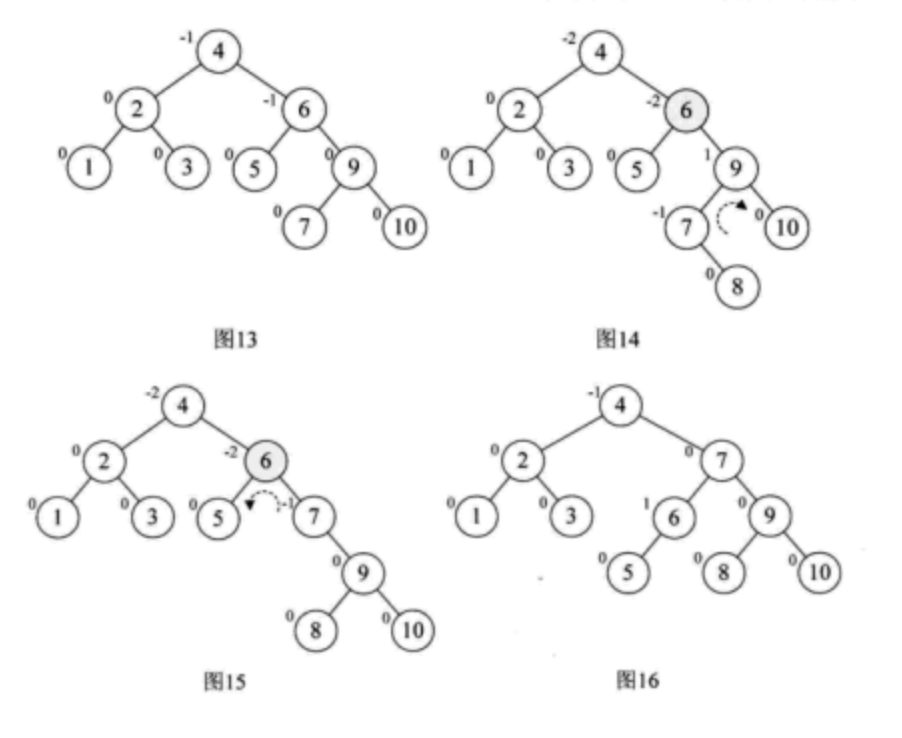
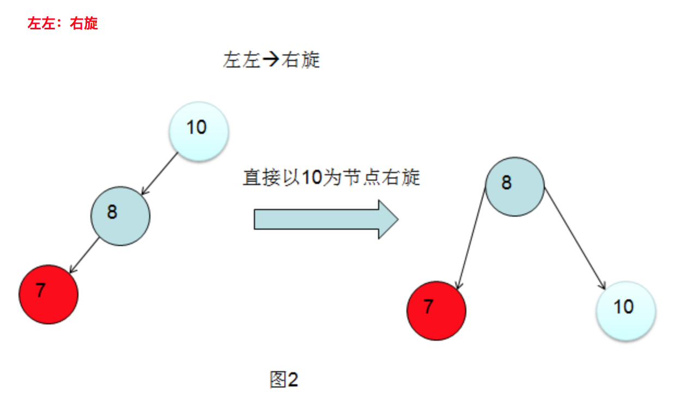

Definition
二叉平衡树，又称AVL树。它或者是一棵空树，或者是具有下列性质的树： 1. 具备二叉排序树的所有性质； 2. 左子树和右子树深度差的绝对值不超过1； 3. 左子树和右子树都是二叉平衡树。
将二叉树上结点的左子树深度减去右子树深度的值称为平衡因子BF，那么平衡二叉树上的所有结点的平衡因子只可能是-1、0和1。只要二叉树上有一个结点的平衡因子的绝对值大于1，则该二叉树就是不平衡的。
平衡二叉树的前提是它是一棵二叉排序树。
距离插入结点最近的，且平衡因子的绝对值大于1的结点为根的子树，称为最小不平衡子树。如下图所示，当插入结点37时，距离它最近的平衡因子的绝对值超过1的结点是58。 
| ### 平衡二叉树实现原理 |
| 平衡二叉树构建的基本思想就是在构建二叉排序树的过程中，每当插入一个结点时，先检查是否因插入而破坏了树的平衡性，若是，则找出最小不平衡子树。在保持二叉排序树特性的前提下，调整最小不平衡子树中各结点之间的链接关系，进行相应的旋转，使之成为新的平衡子树。 |
| 下面讲解一个平衡二叉树构建过程的例子。现在又a[10] = {3, 2, 1, 4, 5, 6, 7, 10,9,8}需要构建二叉排序树。在没有学习平衡二叉树之前，根据二叉排序树的特性，通常会将它构建成如下左图。虽然完全符合二叉排序树的定义，但是对这样高度达到8的二叉树来说，查找是非常不利的。因此，更加期望构建出如下右图的样子，高度为4的二叉排序树，这样才可以提供高效的查找效率。 |
 |
| 现在来看看如何将一个数组构成出如上右图的树结构。 对于数组a的前两位3和2，很正常地构建，到了第个数“1”时，发现此时根结点“3”的平衡因子变成了2，此时整棵树都成了最小不平衡子树，需要进行调整，如下图图1（结点左上角数字为平衡因子BF值）。因为BF为正，因此将整个树进行右旋（顺时针），此时结点2成了根结点，3成了2的右孩子，这样三个结点的BF值均为0，非常的平衡，如下图图2所示。 |
 |
| 然后再增加结点4，平衡因子没有改变，如上图图3。增加结点5时，结点3的BF值为-2，说明要旋转了。由于BF是负值，对这棵最小平衡子树进行左旋（逆时针旋转），如下图图4，此时整个树又达到了平衡。 |
|  |
| 继续增加结点6时，发现根结点2的BF值变成了-2，如下图图6所示。所以对根结点进行了左旋，注意此时本来结点3是结点3的左孩子，由于旋转后需要满足二叉排序树特性，因此它成了结点2的右孩子，如图7所示。 |
|  |
增加结点7，同样的左旋转，使得整棵树达到平衡，如下图8和9所示。  |
当增加结点10时，结构无变化，如图10所示。再增加结点9，此时结点7的BF变成了-2，理论上只需要旋转最小不平衡树7、9、10即可，但是，如果左旋转后，结点9变成了10的右孩子，这是不符合二叉排序树的特性的，此时不能简单的左旋。如图11所示。  |
仔细观察图11，发现根本原因在于结点7的BF是-2，而结点10的BF是1，也就是说，它们两个一正一负，符号并不统一，而前面的几次旋转，无论左还是右旋，最小不平衡子树的根结点与它的子结点符号都是相同的。这就是不能直接旋转的关键。 不统一，不统一就把它们先转到符号统一再说，于是先对结点9和结点10进行右旋，使得结点10成了9的右子树，结点9的BF为-1，此时就与结点7的BF值符号统一了，如图12所示。  |
| 这样再以结点7为最小不平衡子树进行左旋，得到如下图13。接着，插入8，情况与刚才类似，结点6的BF是-2，而它的右孩子9的BF是1，如图14，因此首先以9为根结点，进行右旋，得到图15，此时结点6和结点7的符号都是负，再以6为根结点左旋，最终得到最后的平衡二叉树，如图16所示。  |
| 通过这个例子，可以发现，当最小不平衡树根结点的平衡因子BF是大于1时，就右旋，小于-1时就左旋，如上例中的结点1、5、6、7的插入等。插入结点后，最小不平衡子树的BF与它的子树的BF符号相反时，就需要对结点先进行一次旋转以使得符号相同后，再反向旋转一次才能够完成平衡操作，如上例中结点9、8的插入时。 |
插入操作
在平衡二叉树进行插入操作时遇到的不平衡情况有多种，但是这么多种情况都可以分解为一下四中基础情景：把它叫做：左左、左右、右右、右左。
在解释这四种情景之前需要先明白一个定义：最小不平衡节点—插入一个节点之后，距离这个插入节点最近的不平衡节点就是最小不平衡节点。所有的旋转都是在最小不平衡节点的基础上进行的。
继续解释四种情景命名意义： 1. 左左：节点插入在最小不平衡节点的左子树的左子树上。 2. 左右：节点插入在最小不平衡节点的左子树的右子树上面。 3. 右右：节点插入在最小不平衡树的右子树的右子树上面。 4. 右左：节点插入在最小不平衡树的右子树的左子树上面。
解决办法为： 


删除操作
删除的流程如下：
拿到要删除的数字 value，从根节点开始比对，知道找到一个要删除的节点：currNode
从左子树中找到一个最大值（左子树中的值都比 currNode 小）：targetNode（如果左子树为空，那就直接把 right 节点上位；如果 right 也是空的，那就直接删掉 currNode 就好了）
把 targetNode 放到 currNode 的位置上：因为每个 节点都有 parent、left、right 三个关联点，要仔细处理
和 插入类似，从 targetNode 开始一路向上，找到第一个失衡点。此时只有 LL 和 RR 两种失衡情况，判断起来相对容易些